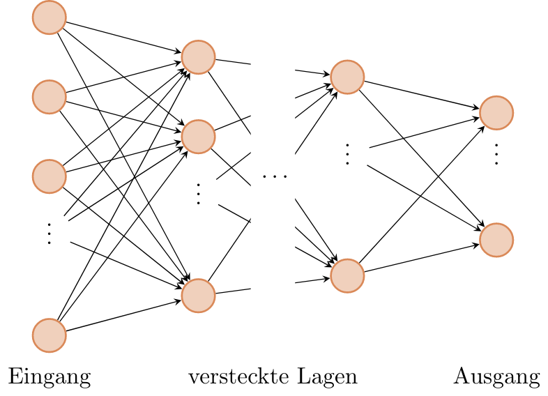
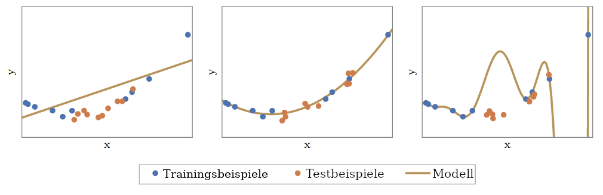

Maschinelles Lernen¶
In diesem Teil soll es um ein einfaches Beispiel für maschinelles Lernen gehen. Maschinelles Lernen bedeutet, dass ohne menschliches Zutun neues Wissen aus bestehenden Daten erhalten und dieses verallgemeinert wird. Dadurch sollen Zusammenhänge und Muster erkannt werden, die auch auf unbekannte Beispieledaten anwendbar sind.
Ein paar Beispiele, wo maschinelles Lernen sehr praktisch sein kann:
Schrifterkennung
Texte übersetzen
Spotify / YouTube Vorschläge
Aktivitätserkennung
Werbung filtern
Facebook Timeline
…
Fallen euch noch mehr ein?
Was ist ein neuronales Netz?¶
Herkömmliche neuronale Netze, wie sie beim maschinellen Lernen verwendet werden, sind aus mehreren Lagen aus Neuronen aufgebaut (orange), welche unterschiedlich stark verbunden sein können. Diese Stärke dieser Verbindungen, die Gewichte, enthalten das “Wissen” und werden beim Trainieren automatisch angepasst.
{kind=link}
Wie viele Neuronen und Gewichte sind nötig?¶
Die Wahl eines geeigneten Modells ist gar nicht so einfach. Ist das Modell zu klein, also enthält es zu wenig Neuronen und Gewichte, dann kann es die zu lernenden Zusammenhänge nicht richtig abbilden. Ist es aber zu komplex, also enthält es zu viele Neuronen, so ist dies ebenfalls schlecht. Es können dann zwar die meisten Beispiele, die zum Lernen verwendet wurden, richtig erkannt werden, bei Unbekanntem scheitert das Modell aber. Man sagt, dass solch ein Modell nicht genug verallgemeinern kann. Es hat zwar alle Beispiele auswendig gelernt, kann aber die zu Grunde liegenden Zusammenhänge nicht verstehen.
{kind=link}
Umgebung vorbereiten¶
Bevor wir mit unseren Experimenten beginnen können, müssen wir erneut unsere Umgebung vorbereiten:
from _static.common.helpers import setup_hardware_client, save_nightly_calibration
setup_hardware_client()
Beispiel: Erkennung von handgeschriebenen Ziffern¶
Dies ist ein sehr beliebtes Beispiel für den Einsatz von maschinellem Lernen: In einem Briefzentrum sollen die Postleitzahlen der Briefe in der Sortieranlage automatisch gelesen werden, damit die Briefe in die richtigen Fahrzeuge verladen werden können. Um dieses Problem zu lösen, wurden viele verschiedene Bilder gesammelt und jeweils der richtigen Ziffer zugeordnet.
# Hier werden erstmal alle Dinge importiert, die wir später brauchen.
import threading
import traceback
import time
from functools import partial
import numpy as np
import torch
from torchvision import datasets, transforms
import hxtorch
import ipywidgets as w
from ipycanvas import Canvas, hold_canvas
from IPython import get_ipython
from tqdm.auto import tqdm
%matplotlib inline
import matplotlib.pyplot as plt
save_nightly_calibration('hagen_cocolist.pbin')
hxtorch.init_hardware(hxtorch.CalibrationPath('hagen_cocolist.pbin'))
hxtorch.set_mock_parameter(hxtorch.measure_mock_parameter())
Im maschinellen Lernen ist das klassifizieren von Bildern ein beliebtes Beispiel, sodass eine große Sammlung von Bildern, welche Zahlen darstellen, frei verfügbar ist. Diese Sammlung laden wir im folgenden runter:
# Ort, an dem das Set von Bildern gespeichert werden soll:
data_path = 'mnist'
# use stored MNIST data for tests
data_path = '/loh/data/mnist'
transform = transforms.Compose([
transforms.ToTensor(),
transforms.Lambda(lambda x: x.round())
])
train_transform = transforms.Compose([
transforms.RandomResizedCrop(28),
transform,
])
# Die Bilder der Ziffern werden geladen.
# Mit `train_data` wird trainiert, mit `test_data` kann nachher überprüft
# werden, wie gut das Netzwerk verallgemeinern kann.
train_data = datasets.MNIST(data_path, train=True, transform=train_transform,
download=True)
test_data = datasets.MNIST(data_path, train=False, transform=transform,
download=True)
numbers = {n: [] for n in range(10)}
for img, n in test_data:
numbers[n].append(img)
train_loader = torch.utils.data.DataLoader(
dataset=train_data, batch_size=200, shuffle=True)
test_loader = torch.utils.data.DataLoader(
dataset=test_data, batch_size=200)
Nun stellen wir einige, zufällige Bilder aus dem Set dar:
fig, axs = plt.subplots(2, 2, constrained_layout=True)
N = len(test_data)
for ax in axs.flatten():
image = test_data[np.random.randint(0, N-1)][0][0]
ax.imshow(image, cmap='Greys')
ax.set_axis_off()
{kind=link}
Um diese Bilder jetzt auch automatisch richtig zu erkennen, wird zunächst eine Beschreibung eines neuronalen Netzwerks benötigt. Der folgende Programmcode definiert ein Netzwerk mit einer einzelnen verstecken Lage mit 128 Neuronen.
class Model(torch.nn.Module):
"""
Ein sehr einfaches neuronales Netzwerk mit einer einzigen
Lage aus versteckten Neuronen.
"""
def __init__(self, mock=True):
super().__init__()
self.mock = mock
num_hidden = 256 # die Anzahl der versteckten Neuronen
self.classifier = torch.nn.Sequential(
# Diese Lage verbindet jeden Pixel des Bildes
# mit jedem versteckten Neuron:
hxtorch.nn.Linear(
in_features=28 * 28, # die Bilder sind 28x28 Pixel groß
out_features=num_hidden,
mock=mock), hxtorch.nn.ConvertingReLU(shift=1, mock=True),
hxtorch.nn.Linear(
in_features=num_hidden,
out_features=num_hidden,
mock=mock), hxtorch.nn.ConvertingReLU(shift=1, mock=True),
# Diese Lage verbindet jedes der verstecken Neuronen
# mit einem der 10 möglichen Ausgänge:
hxtorch.nn.Linear(
in_features=num_hidden,
out_features=10, # es gibt 10 verschiedene Ziffern
mock=mock)
)
def forward(self, x):
x = x.view(-1, 28 * 28) * 31.
x = self.classifier(x)
return x
Dieses Modell ist aber noch “dumm”, d.h. es kann die Zahlen noch nicht richtig erkennen. Das können wir direkt mal ausprobieren:
class ZahlenMalen:
"""
Einfache Oberfläche, um MNIST-Bilder zu malen.
"""
def __init__(self, model, numbers, *,
scale: int = 10, line_width: float = 2.5, autostop: bool = True):
self.down = False
self.erase = False
self.changes_pending = True
self.running = False
self.model = model
self.numbers = numbers
self.scale = scale
self.line_width = line_width
self.autostop = autostop
self.started_at = get_ipython().execution_count
# Elemente der Oberfläche vorbereiten
self.canvas = Canvas(
width=scale * 28, height=scale * 28,
sync_image_data=True,
layout=w.Layout(border='solid gray', margin='10px'))
self.color_chooser = w.RadioButtons(
description='Farbe ✏️', options=['schwarz', 'weiß'])
self.clear_button = w.Button(description='Löschen', button_style='')
self.submit_button = w.Button()
self.result_text = w.HTML()
height = (scale * 28 + 0) / 10
b_layout = w.Layout(width=f"{height}px", height=f"{height}px")
self.number_buttons = [
w.Button(description=str(n),layout=b_layout) for n in range(10)]
# Events für die Maus-/Touchsteuerung registrieren
self.canvas.on_mouse_down(self.start_draw)
self.canvas.on_mouse_up(self.stop_draw)
self.canvas.on_mouse_out(self.stop_draw)
self.canvas.on_mouse_move(self.draw)
self.canvas.on_touch_start(self.start_draw)
self.canvas.on_touch_end(self.stop_draw)
self.canvas.on_touch_cancel(self.stop_draw)
self.canvas.on_touch_move(self.draw)
self.submit_button.on_click(self.toggle_worker)
self.clear_button.on_click(self.clear)
w.interactive(self.choose_color, color=self.color_chooser)
for n, button in enumerate(self.number_buttons):
button.on_click(partial(self.draw_number, n))
self.start_worker()
def display(self):
display(w.HBox([w.VBox(self.number_buttons),
self.canvas,
w.VBox([self.color_chooser,
w.HBox([self.clear_button, self.submit_button]),
self.result_text])]))
def draw(self, x, y):
if self.down:
x = (round(x/self.scale) - self.line_width / 2) * self.scale
y = (round(y/self.scale) - self.line_width / 2) * self.scale
lw = self.scale * self.line_width
func = self.canvas.clear_rect if self.erase else self.canvas.fill_rect
func(x, y, lw, lw)
self.changes_pending = True
def draw_number(self, n: int, *_):
assert 0<=n and n<10
self.clear()
self.put_image_data(
self.numbers[n][np.random.randint(0, len(self.numbers[n]))])
def start_draw(self, x, y):
self.down = True
self.draw(x, y)
def stop_draw(self, x, y):
self.down = False
def choose_color(self, color):
self.erase = (color == 'weiß')
def clear(self, *args):
self.canvas.clear()
self.changes_pending = True
def get_image_data(self):
try:
s = slice(round(self.scale/2), None, self.scale)
image_data = self.canvas.get_image_data()[s, s, -1]
except:
image_data = self.canvas.create_image_data(
self.canvas.width//self.scale, self.canvas.height//self.scale)[..., -1]
return image_data / 255
def put_image_data(self, image_data):
d = self.canvas.create_image_data(
self.canvas.width, self.canvas.height)
d[:, :, -1] = image_data.repeat_interleave(
self.scale, -2).repeat_interleave(self.scale, -1) * 255
self.canvas.put_image_data(d)
self.changes_pending = True
def inference(self):
try:
if self.model.mock:
time.sleep(0.5)
data = torch.tensor(
self.get_image_data(), dtype=torch.float).unsqueeze(0)
results_p = self.model(data.unsqueeze(0)).detach().flatten()
results = reversed(results_p.argsort())
results_t = [f"<h4>{i} <small>({results_p[i]:.0f})</small></h4>" for i in results]
text = "<h3>Ergebnis:</h3>"
text += ''.join(results_t[:5])
self.result_text.value = text
except:
self.print_traceback()
def print_traceback(self):
"""
Zeigt eventuelle Fehler als roten Text auf der Oberfläche
https://github.com/martinRenou/ipycanvas/issues/61
"""
self.canvas.fill_style = '#ff8888'
self.canvas.fill_rect(10, 10, 300, 300)
self.canvas.fill_style = '#000000'
s = traceback.format_exc()
for i, si in enumerate(s.split('\n')):
self.canvas.fill_text(si, 20, 30+15*i)
def start_worker(self, *_):
""" Startet einen neuen Hintergrundprozess """
self.started_at = get_ipython().execution_count
self.running = True
self.submit_button.description = "Stop"
self.submit_button.button_style = "danger"
def work(zm: ZahlenMalen):
while zm.running:
if zm.changes_pending or True:
zm.changes_pending = False
zm.inference()
else:
time.sleep(0.2)
if self.autostop and get_ipython().execution_count > zm.started_at + 1:
zm.stop_worker()
thread = threading.Thread(target=work, args=(self,))
thread.start()
def stop_worker(self, *_):
# stop and update button
self.running = False
self.submit_button.description = "Start"
self.submit_button.button_style = "success"
def toggle_worker(self, *_):
if self.running:
self.stop_worker()
else:
self.start_worker()
# Anzeigen der Oberfläche zum Malen
model = Model()
zm1 = ZahlenMalen(model, numbers, line_width=2)
zm1.display()
{kind=link}
In dem weißen Bereich kann man selber malen oder mit den Knöpfen auf der linken Seite eine Zahl malen lassen. Unter Ergebnis sollte dann ganz oben die wahrscheinlich richtige Ziffer erscheinen, darunter kommen die Ziffern, die das Modell als etwas weniger wahrscheinlich vorschlägt. Da herrscht jetzt vermutlich noch ein ziemliches Durcheinander, aber es wurde ja auch noch nicht trainiert!
Training des Modells¶
In diesem Teil soll nun ein Modell so trainiert werden, dass es möglichst gut handgeschreibene Ziffern erkennen kann. Dazu werden im Folgenden zwei Funktionen benötigt:
trainzeigt dem Netzwerk nacheinander jedes Trainingsbeispiel und passt dabei die Gewichte, die Verbindungen zwischen den Neuronen, an.testtestet, wie gut das Netzwerk verallgemeinern kann. Dafür wird versucht die Testbeispiele (die nicht zum Trainieren verwendet wurden) zuzuordnen und das Ergebnis mit den richtigen Ziffern verglichen.
zm1.stop_worker()
def train(model: torch.nn.Module,
loader: torch.utils.data.DataLoader,
optimizer: torch.optim.Optimizer):
"""
Diese Funktion trainiert das Modell.
:param model: Das Modell
:param loader: Die zu verwendenden Beispielbilder
:param optimizer: Der Optimierer, der zum Anpassen des Modells
verwendet werden soll
"""
model.train()
pbar = tqdm(
total=len(loader), unit="batch", postfix=" " * 11, leave=False)
for data, target in loader:
optimizer.zero_grad()
output = model(data)
loss = torch.nn.functional.cross_entropy(output, target) / 64
loss.backward()
optimizer.step() # automatisches Anpassen der Gewichte
pbar.set_postfix(loss=f"{loss.item():.4f}")
pbar.update()
pbar.close()
def test(model: torch.nn.Module, loader: torch.utils.data.DataLoader) -> float:
"""
Diese Funktion testet das Modell.
:param model: Das zu testende Modell
:param loader: Die zu verwendenden Beispielbilder
:return: Die erreichte Genauigkeit
"""
model.eval()
loss = 0
n_correct = 0
n_total = len(loader.dataset)
pbar = tqdm(total=len(loader), unit="batch", leave=False)
with torch.no_grad():
for data, target in loader:
output = model(data)
pred = output.argmax(dim=1, keepdim=True)
n_correct += pred.eq(target.view_as(pred)).sum().item()
pbar.update()
pbar.close()
accuracy = n_correct / n_total
return accuracy
# Dieses Modell soll trainiert werden
model = Model()
print(model)
# Dieser Optimierer wird für das Training benötigt
# und übernimmt die Anpassung der Gewichte.
optimizer = torch.optim.Adam(
model.parameters(), # es sollen alle Gewichte trainiert werden
lr=0.25, # Geschwindigkeit, mit der gelernt werden soll
)
Trainiert wird nun in sogenannten Epochen, das heißt es werden die gleichen Beispiele immer wieder gezeigt. Dabei sollte das Netzwerk immer besser werden.
num_epochs = 4 # Die Anzahl der Trainingsepochen
for epoch in range(num_epochs):
train(model, train_loader, optimizer)
accuracy = test(model, test_loader)
print(f"Genauigkeit: {accuracy*100:.2f}%")
{kind=link}
Jetzt sollte das Netzwerk die gemalten Ziffern auch erkennen können:
zm2 = ZahlenMalen(model, numbers, line_width=2)
zm2.display()
{kind=link}
Ihr werdet feststellen, das manche Ziffern einfacher erkannt werden als andere. Woran könnte das liegen?
Reicht es auch, nur eine halbe Ziffer zu malen?
zm2.stop_worker()